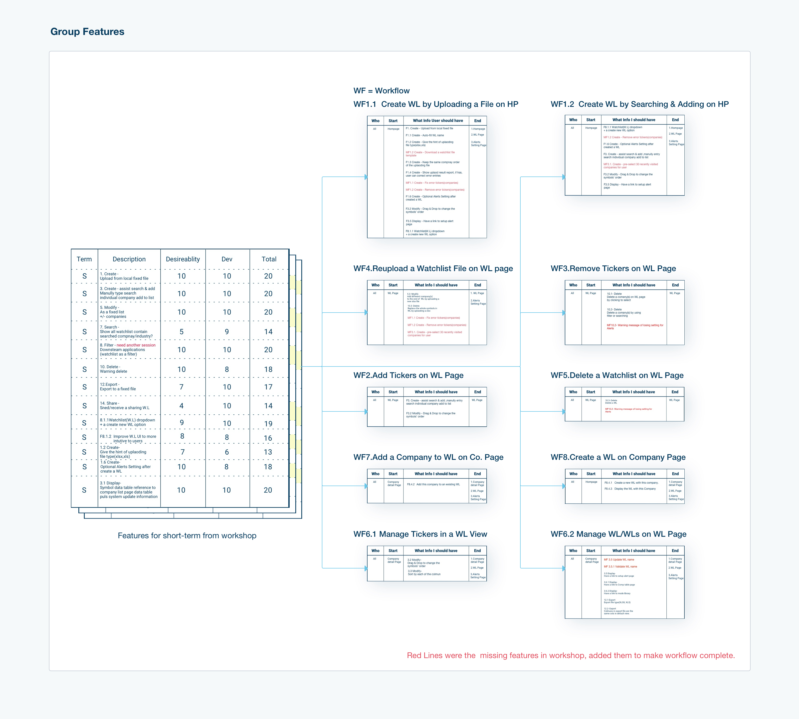
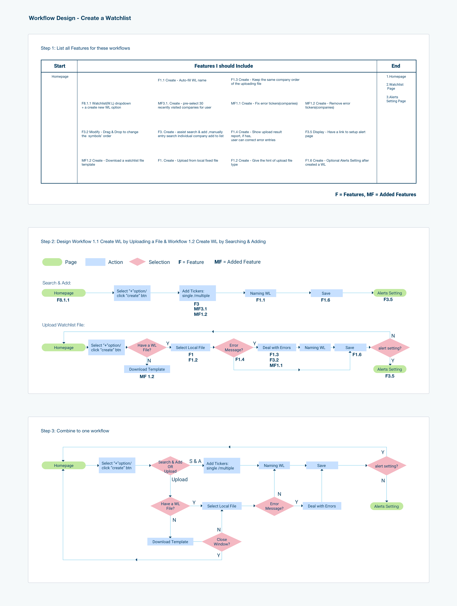

1. BACKGROUND
Watchlist plays a critical role in a financial software platform offered by Visible Alpha. It contains a list of companies which financial professionals use for clients’ investments in the stock market. Watchlist has been on Visible Alpha’s platform for over two years. Having been tasked with redesigning the product, we began by gathering feedback from users. Users noted inefficiencies in managing workflows. We determined that result of these workflow inefficiencies included preventing clients from using both Watchlist and the array of other available downstream applications such as the e-newsletter setting.
I organized and hosted a product design workshop with the Product Manager as well as representatives from marketing, development, and support teams to clarify the product’s mission, summarize users’ archetypes, analyze requirements, and brainstorm features.. After we balanced these features into three stages, we made a short-term, mid-term, and long-term plan.
2.CHALLENGE
The short-term goals were to be addressed and redesigned within three months, including the above research phase. The time constraints imposed were the most challenging part of the project for me. During the allotted time, twenty-four features needed to be designed and configured into nine workflows for Watchlist. All of the features focused on how to manage Watchlist in the most user-friendly and efficient manner possible. Further, they encouraged users to use downstream applications via Watchlist. Ultimately, I succeeded in designing nine workflows within the three-month deadline with high fidelity prototypes for the engineering team to develop.
3. PLAN & EXECUTION
To create features for high fidelity prototypes, I followed the following steps:
1. Grouping the features by their operations and start/endpoint into workflow drafts. Examples include the watchlist creation process on the homepage or the deletion of a watchlist on the maintenance page.
2. Planning workflows and added missing features to make the workflow complete.
3. Sketching low fidelity pages and linked them together for a user testing session.
4. Designing high fidelity prototypes followed by a second user testing session.
5. Updating the design before delivering it to the programmers.

3.1 Group Features into a workflow draft
All features were placed into users' operation groups. The operations included:
- creation
- deletion
- search
- display
- modification
- share

Some workflows shared the same start point and endpoint. This was one of the two reasons that convinced me to combine them into one workflow. Once merged, each of them would serve as a branch of the new one. An example of this is having two methods to create a watchlist on the homepage.
The second reason I chose to combine them into one workflow was from the product perspective. Before the workshop, I studied our user data and learned that nearly 70% of our users uploaded a file to create a watchlist. The Product Manager suggested another for developing a watchlist. With the 'Search & Add' method, the program suggests companies based on recently viewed criteria. Compared to uploading a file, Search & Add was more efficient and accurate for users to create a watchlist. My goal was to give these users an opportunity to use this method.

3.2 Steps of the workflow
At this stage, the main task was to design the number of steps to finish one workflow. Users could complete the workflow in one window or multiple windows, depending on the complexity of the workflow. One window refers to a page or a modal. For the creation of the new workflow, I balanced the number of actions and how much information users needed to process for each operation. Thus, I designed three steps for creating a watchlist. First, users chose which way to create a watchlist. Next, users either uploaded a company list file or searched the companies they had interests in and added them to the list. Finally, users could select e-newsletter settings.

3.3 Low fidelity prototype
In this step, it was critical to ensure the workflow was complete. In order to help users achieve their goals, they had to have enough information to place in a named watchlist.
The second key was usability. To ensure a smooth workflow, I followed similar layouts and a visually consistent flow to lead users toward finishing the task. Typically I design at least two versions to compare and determine the more efficient and user-friendly version. Since this was a prototype, it was necessary to check whether users face any obstacles while finishing any given task. Therefore, user testing was conducted to help me improve usability.
The third key was efficiency. Here, I used the results from my earlier user data-mining research. To help users more quickly and efficiently create a watchlist on the platform, I designed a completely new feature for Watchlist. This feature involved offering default companies based on this user’s recently viewed companies. The goal of the new feature was to help users create a new watchlist easily and quickly. Prior to this feature addition, users had to search each company separately. Based on my prior study of over 10.000 records, the average size of a watchlist is 28, and I rounded to 30. So thirty of most recently viewed companies became the suggested companies deployed for this feature.
Another feature for efficiency was suggesting a watchlist name. Suggested names were included in the program based on the most typical naming pattern identified (an ordinal number and today's date). 80% of users' scenarios were covered with these default options. For the remaining 20%, we planned to add metadata tags for each of the companies. Based on these tags of all companies in a watchlist, we designed a naming rule, which is in the long-term plan, to suggest a file name to users.
After applying these new features, users only used three mouse clicks to create a new watchlist for most cases.

3.4 High Fidelity prototype
The goal for high fidelity design was readability.
The goal for the high fidelity design was its readability. I applied the design system and UI library content to my low fidelity design, then went ahead with the high fidelity design. Since Visible Alpha was in the midst of a UI refresh project, I selected the data table for my redesign part. One reason is that the current one had obstacles for users to understand the workflow. The new design helped them to understand the workflow easily. Another one was the new design was easy to implement after I discussed it with the development team.

3.5 testing
I planned and facilitated usability testing for the watchlist creation process. The testing was done internally by employing four newly hired employees from the marketing and product teams. While not familiar with Watchlist, each of the testers had a financial background and was able to finish the required tasks without assistance or hints. I used their feedback to improve my design before finalizing it.

3.6 deliverables
I created an inVision prototype for the developers to navigate the workflows I designed. However, inVision does not provide a workflow-level map. This meant the developers would not have the full picture of the needs. To ensure the developers had all of the information needed to create the product as designed successfully, I drew a navigation chart and integrated it into the prototype. For the details, I exported the Sketch files to Zipline. The developers were then provided with all of this information from which they could begin.


4 Takeaway
A logical work process leads to design practical with fewer efforts. The logical workflow has several different steps for different purposes. An example of this is the difference between Low fidelity and High fidelity designs. Low fidelity design ensures the solution is user-friendly and that the workflow is effective for the end-user. High fidelity ensures the layout is consistent for the end-user and that the visual language is clear and coherent.
Making sure to engage in user testing with clear goals serves as a critical reminder to design the product with each of the needs and requirements of the end-user in mind. If the new version did not take these needs into account, the redesign would not be successful.